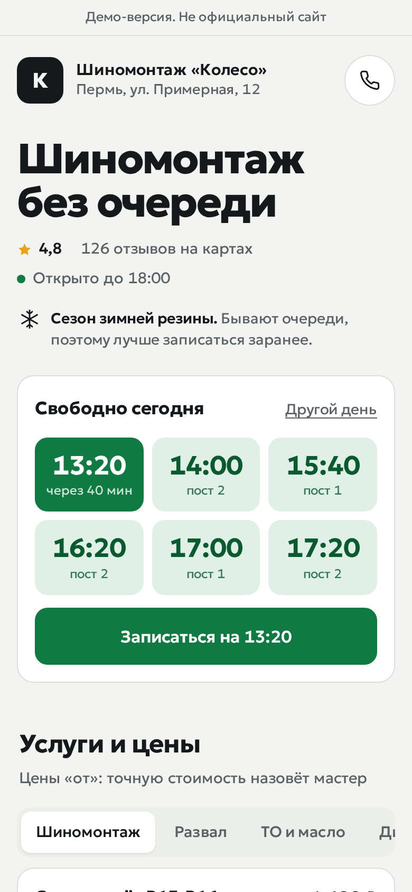
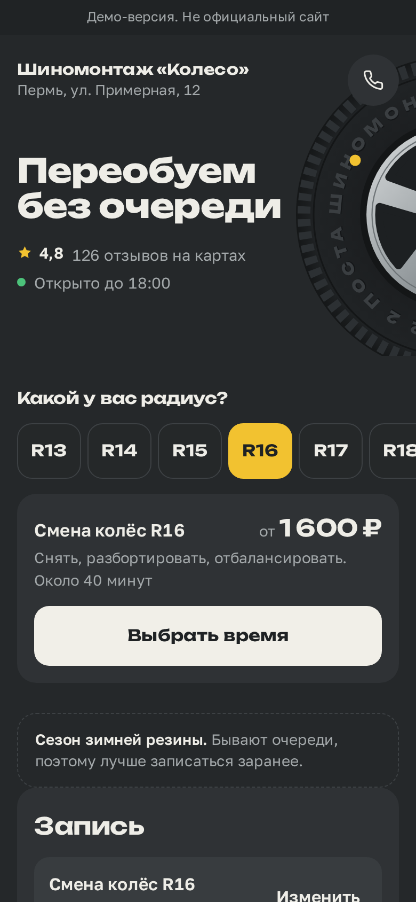
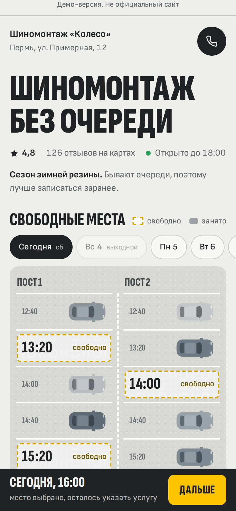

1. Свободно
Спокойная сильная база. Светлый фон, зелёный цвет означает свободное время. Ближайшие окна видны сразу, запись в одну кнопку.
Открыть макетОдин и тот же демо-сервис «Колесо» в трёх вариантах. Откройте любой на телефоне и на компьютере: время, радиус и места на плане можно нажимать. Оранжевого нет ни в одном.

Спокойная сильная база. Светлый фон, зелёный цвет означает свободное время. Ближайшие окна видны сразу, запись в одну кнопку.
Открыть макет
Смелый вариант про шины. Цвет резины, шина с надписью по кругу. Клиент выбирает радиус и сразу видит свою цену.
Открыть макет
Необычный вариант. Вид сверху на посты на сегодня: занятые места с машинами, свободные размечены жёлтым. Нажал на место и выбрал время.
Открыть макетВо всех трёх список услуг показан один раз (сейчас на сайте он повторяется в записи), а на компьютере форма записи стоит справа и не уезжает при прокрутке. Это макеты: в настоящий сайт пока ничего не перенесено.